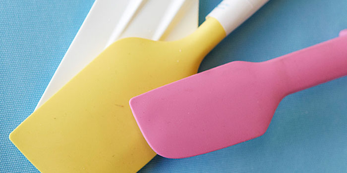

|  | Most kitchens will have a traditional slatted wooden, metal or plastic spatula to use when flipping ingredients or serving up dishes, but a baking spatula is designed especially for use with cake batters or whipped cream. Usually made from silicone, they are great for scooping every tiny amount of raw mix from the bowl, plus the are easy to clean and usually have a little hole for hanging. |